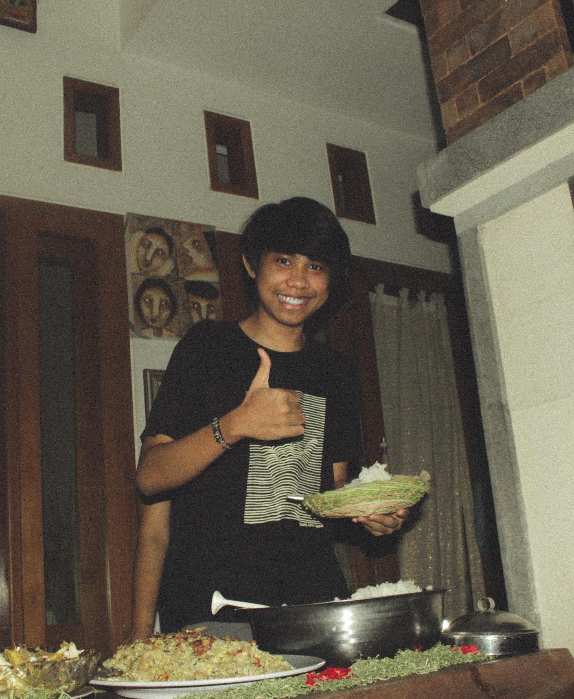

Home
Profile
Services
Collaboration
Creator
The Creator

Ida Bagus Kade Rainata Putra Wibawa/5025201235/Framework Progamming C
About Us
The Number One Photography Service in Indonesia Since 2008
Arts, Love, Passion, Memories
>